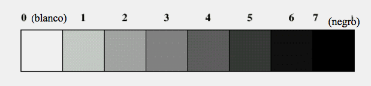

El paper central de les comunicacions és moure informació d'un lloc a un altre. Quan el transmissor i el receptor estan físicament a la mateixa localitat, és relativament fàcil fer aquesta funció. Però quan el transmissor i el receptor estan relativament lluny un de l'altre, i a més volem moure alts volums d'informacion en un període curt de temps, llavors serà necessari emprar una forma de comunicació maquina-màquina.
El mètode més adequat per a la comunicació maquina-màquina és través d'una senyal generada electrònicament. La raó de l'ús de l'electrònica, és perquè una senyal pot ser generada, transmesa, i detectada. i pel fet que aquesta pot ser emmagatzemada temporal o permanentment; També perquè poden ser transmesos grans volums d'informació dins en un període curt de temps.
El concepte bàsic de la teoria de comunicacions és que una senyal té almenys dos estats diferents que poden ser detectats. Els dos estats representen un zero o un u, encès o apagat, etc. Tan aviat com els dos estats puguin ser detectats, la capacitat de moure informació existeix. Les combinacions especifiques d'estats (les quals són conegudes com codis) poden representar qualsevol caràcter alfabètic o numèric, i podran ser transmès en forma pura d'informació des de les màquines per interactuar amb, o en forma representativa (el codi) que permeti el reconeixement de la informació pels humans.
Exemple 1
A la figura següent hi ha representats 8 nivells de brillantor (des del blanc fins al negre). Suposem que explorem aquests nivells amb un càmera que ens lliura una certa tensió en funció del nivell de brillantor. Si volem identificar aquests nivells de brillantor en valors d'una senyal de tensió binària (0 o un 1) tindriem:

Figura 8: Nivells de brillantor.
Per identificar els 8 nivells de brillantor hauriem de utilitzar 3 digits binaris per nivell atès que amb un sol dígit binari tenim només 2 possibilitats (un o zero).
Per exemple el blanc podria ser identificat amb els dígits 000 i el negre amb els dígits 111. Els valors de gris intermedi entre el blanc i el negre prendrien els dígits binaris:
- 000
- 001
- 010
- 011
- 100
- 101
- 110
- 111